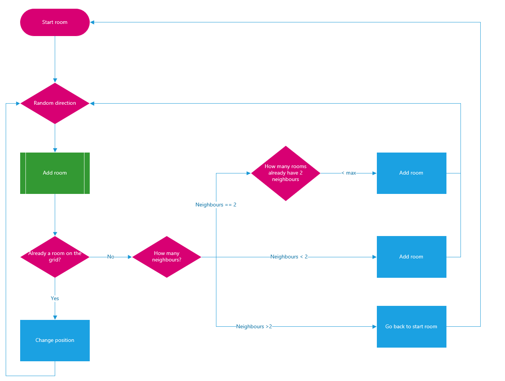

Binding of Isaac: Remake
Abstract
Help Isaac nagivate through the dark dungeon with terrible monsters to find the light.
The project
The random dungeon generator
The most impressive thing I did in this project was making my own 'random' dungeon generator. In the graphic below you can see the logic behind this dungeon generator.
Other noticable things I did
- The minimap concept with updates about what room the player already visited.
- The effect manager makes it able to have effects stay on the screen and registered to rooms instead of objects that will be removed.
- Saving and loading the game is done by operator overloading.
- Some sort of gameflow is implemented to have an efficient way of going through the menu and to easily pause the game.
Results
Links
To see the code more in detail, go check out my github repository!